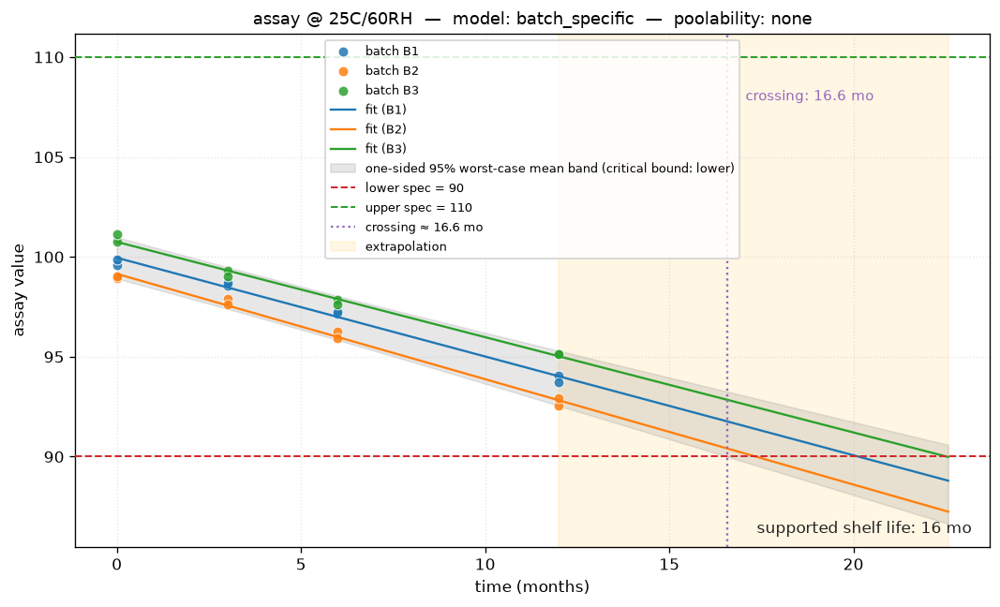
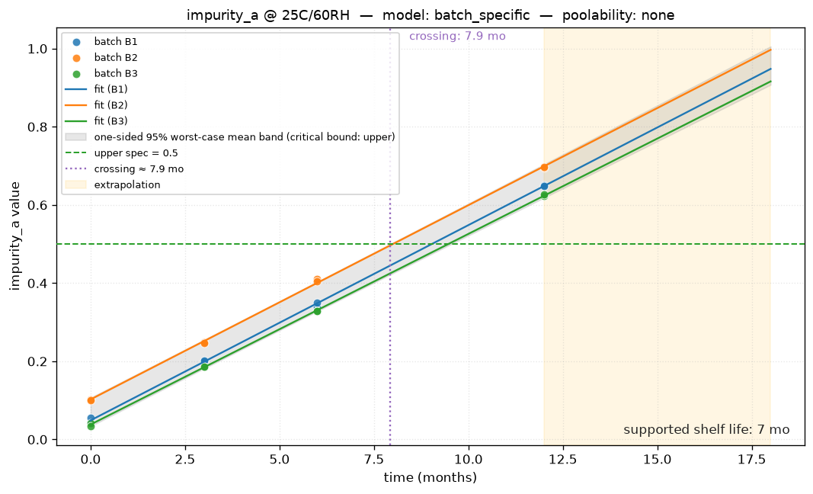

OpenPharmaStability multi-attribute report
Tool version 1.0.4 ·
Python 3.12.10 ·
pandas 3.0.3
Disclaimer. This report is ICH Q1E-inspired and intended for educational, exploratory, and reproducible decision-support use. It is not a substitute for qualified regulatory, statistical, or quality review. The toolkit does not provide 21 CFR Part 11 audit trails, electronic signatures, or data integrity controls, and is not a validated GxP system.
Executive summary
| Condition | 25C/60RH |
|---|
| Product type | product |
|---|
| Deliverable term | shelf life |
|---|
| Overall supported shelf life |
7
(extrapolation flagged) |
|---|
| Limiting attribute | impurity_a |
|---|
| Attributes analyzed | 2 (2 eligible for limiting decision) |
|---|
| Observed data length | 12.0 mo |
|---|
Overall decision
| Attribute | Unit | Role | Model | Poolability |
Crossing | Statistical (mo) | Supported (mo) | Limiting? |
| assay | %LC | primary | batch_specific | none | crossed | 16.57 | 16 | yes |
| impurity_a | %area | primary | batch_specific | none | crossed | 7.93 | 7 | yes |
Per-attribute details
Attribute: assay (%LC)
Role: primary ·
Direction: decreasing ·
Spec:
lower=90,
upper=110 (unit: %LC)
Report order: 1
Model: batch_specific ·
Poolability: none
(pslopes=0.206,
pintercepts=n/a)
Crossing: crossed ·
Statistical: 16.57 mo ·
Governing batch: B2
Supported shelf life:
16 mo
(extrapolation flagged)
ICH Q1A gate: accelerated=— · intermediate=— · allowed=yes · rationale=no accelerated data

Warnings
- data_quality[info] duplicate_batch_time_no_replicate: 24 rows share (batch, time, attribute) — no 'replicate' column
- data_quality summary: 0 error(s), 0 warning(s), 1 info; can_analyze=True
- step1 slopes: F-test on time:C(batch), p=0.2059 (alpha=0.25)
- Linearity check failed: lack-of-fit F-test p = 0.04968 < 0.05. Consider a non-linear transform (log, sqrt) or a higher-order model.
- Influence check: 4 observation(s) have Cook's distance > 4.0/n = 0.1667 (row indices [0, 7, 14, 17]). A single observation controls the fit. Consider a sensitivity analysis with and without these points; do not auto-exclude.
- supported shelf life extends beyond observed data (12 mo); extrapolation flagged.
- supported shelf life extends beyond observed data (12 mo); extrapolation flagged.
Attribute: impurity_a (%area)
Role: primary ·
Direction: increasing ·
Spec:
lower=—,
upper=0.5 (unit: %area)
Report order: 2
Model: batch_specific ·
Poolability: none
(pslopes=0.0851,
pintercepts=n/a)
Crossing: crossed ·
Statistical: 7.93 mo ·
Governing batch: B2
Supported shelf life:
7 mo
ICH Q1A gate: accelerated=— · intermediate=— · allowed=yes · rationale=no accelerated data

Warnings
- data_quality[info] duplicate_batch_time_no_replicate: 24 rows share (batch, time, attribute) — no 'replicate' column
- data_quality summary: 0 error(s), 0 warning(s), 1 info; can_analyze=True
- step1 slopes: F-test on time:C(batch), p=0.08506 (alpha=0.25)
- Influence check: 1 observation(s) have Cook's distance > 4.0/n = 0.1667 (row indices [1]). A single observation controls the fit. Consider a sensitivity analysis with and without these points; do not auto-exclude.
Top-level warnings
- data_quality[info] duplicate_batch_time_no_replicate: 24 rows share (batch, time, attribute) — no 'replicate' column
- data_quality summary: 0 error(s), 0 warning(s), 1 info; can_analyze=True
- step1 slopes: F-test on time:C(batch), p=0.2059 (alpha=0.25)
- Linearity check failed: lack-of-fit F-test p = 0.04968 < 0.05. Consider a non-linear transform (log, sqrt) or a higher-order model.
- Influence check: 4 observation(s) have Cook's distance > 4.0/n = 0.1667 (row indices [0, 7, 14, 17]). A single observation controls the fit. Consider a sensitivity analysis with and without these points; do not auto-exclude.
- supported shelf life extends beyond observed data (12 mo); extrapolation flagged.
- step1 slopes: F-test on time:C(batch), p=0.08506 (alpha=0.25)
- Influence check: 1 observation(s) have Cook's distance > 4.0/n = 0.1667 (row indices [1]). A single observation controls the fit. Consider a sensitivity analysis with and without these points; do not auto-exclude.
Reproducibility
| deliverable_term | shelf life |
|---|
| product_type | product |
|---|
| n_attributes_total | 2 |
|---|
| n_attributes_limiting | 2 |
|---|
| tie_break | |
|---|
| tool_version | 1.0.4 |
|---|
| timestamp | 2024-06-01T00:00:00Z |
|---|
| file_path | E:\STABILITY TOOLKIT\examples\multi_attribute.csv |
|---|
| file_sha256 | 37e1b34d21da3c87dd1b3656da37d7d11dab3e46226667fd8a137e02a36da8fb |
|---|
| row_count | 48 |
|---|
| column_count | 8 |
|---|
| library_versions | {'python': '3.12.10', 'pandas': '3.0.3', 'numpy': '2.4.6', 'scipy': '1.17.1', 'statsmodels': '0.14.6', 'openpyxl': '3.1.5'} |
|---|
| random_seed | |
|---|
| data_sheet | |
|---|
| metadata_sheet | |
|---|
| metadata_path | E:\STABILITY TOOLKIT\examples\multi_attribute_metadata.csv |
|---|
End of report.